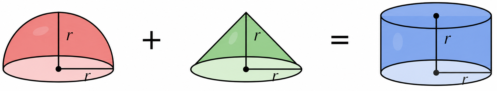
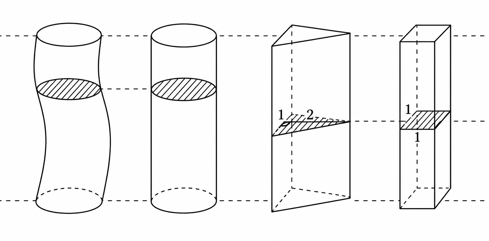
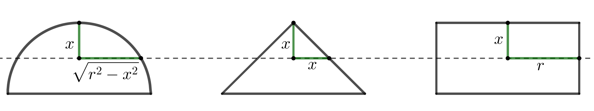

Cavalieri's Principle
The following is a fun volume identity:

This identity is true by Cavalieri’s principle. Once we know it, the volume formula for a sphere follows quickly.
Cavalieri's principle. Consider two regions in space lying between two parallel planes. If every plane parallel to these planes cuts both regions in slices of equal areas, then the regions have equal volume.

Cavalieri’s principle says that cross-sectional area determines volume. The general slicing method in Section 6.3 turns this idea into an integral: if a region can be naturally sliced into thin flat cross sections perpendicular to an axis, then the volume can be computed by summing along that axis.
General slicing method
Suppose a region in space extends from \(x=a\) to \(x=b\), and the area of the flat cross section perpendicular to the \(x\)-axis is given by a continuous function \(A(x)\) on \([a,b]\). Then the volume of the region is
The disk and washer methods are just two special cases where the cross sections are disks and washers.
The volume identity: hemisphere + cone = cylinder
To verify the volume identity, we can use Cavalieri's principle and compare the areas of circular slices at the same height:

Since the slice areas agree at every height, the volume identity is verified.
The volume of a cone is one third the volume of the cylinder with the same base and height. The volume of a cone was known to the Greeks.
So the volumes of the hemisphere, cone, and cylinder are in a ratio of \(2:1:3\)!
Doubling the volume of the hemisphere, we obtain the volume of a sphere:
The End
<\main>